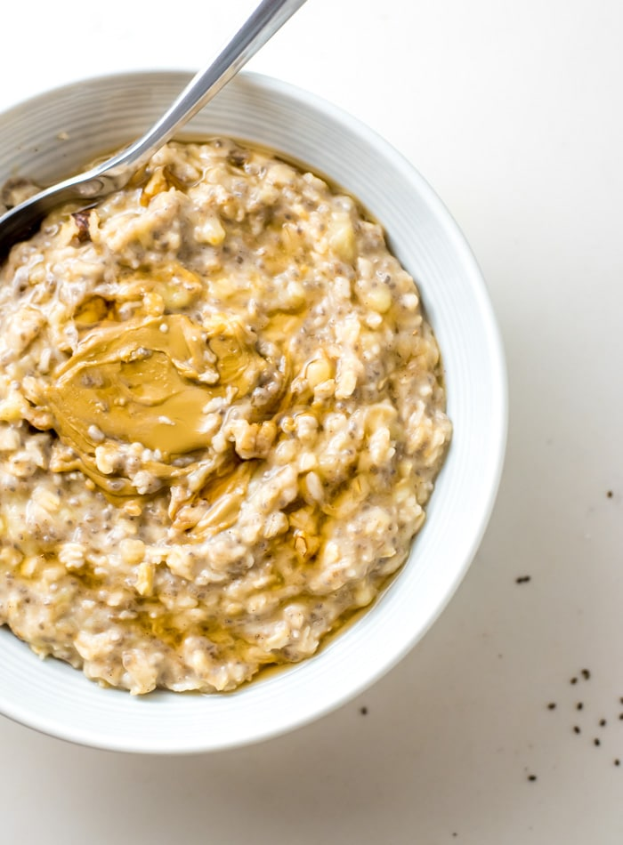

Banana Oatmeal!

Description
Cooking stovetop oatmeal with mashed banana is a recipe for the creamiest, coziest oatmeal ever. To make this amazing, simple creamy banana oatmeal, all you need is an extra ripe, spotty banana, rolled oats, cinnamon, chia seeds, water and almond milk.
Ingredients
- Rolled oats
- Extra ripe banana
- Peanut butter
- Cinnamon
- Milk
Steps
- Put the milk in a pan and boil it.
- Add the Rolled oats and start stirring.
- Add bananas to the mixture and keep stirring.
- After cooking for 5 minutes, take the pan off the stove.
- Add Peanut butter and Cinnamon, and there you go!
Home